SD2-081 · 小车为什么走斜线
high · 双角色、完整小车、地毯工具组、零件盘、墙面工具板、柜架和窗景形成高密度搜索。
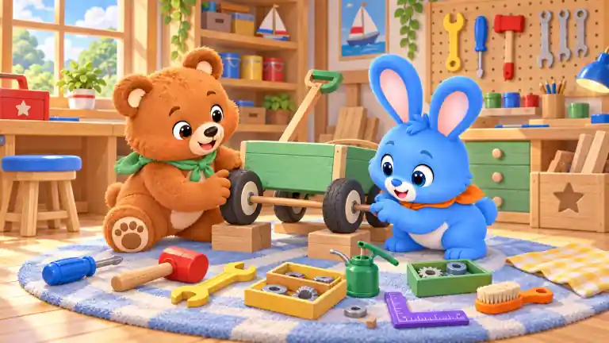
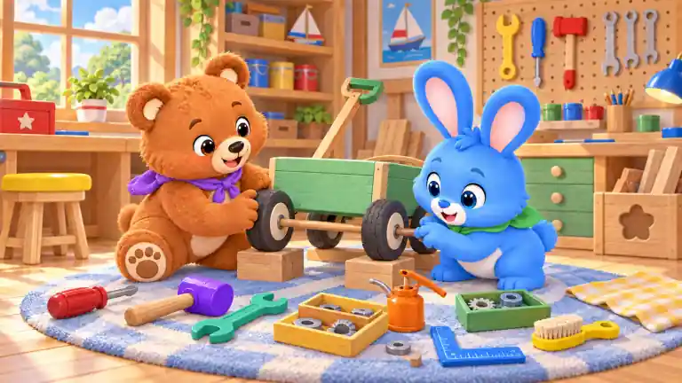
团团绿围巾变紫 · 跃跃橙围巾变绿 · 蓝螺丝刀手柄变红 · 红木槌头变紫 · 黄扳手变青绿 · 绿油壶变橙 · 紫直角尺变蓝 · 橙刷柄变黄色 · 左侧蓝凳面变黄 · 右侧木箱星形镂空变花形
high · 双角色、完整小车、地毯工具组、零件盘、墙面工具板、柜架和窗景形成高密度搜索。


团团绿围巾变紫 · 跃跃橙围巾变绿 · 蓝螺丝刀手柄变红 · 红木槌头变紫 · 黄扳手变青绿 · 绿油壶变橙 · 紫直角尺变蓝 · 橙刷柄变黄色 · 左侧蓝凳面变黄 · 右侧木箱星形镂空变花形
low · 单角色配托盘、四颗木珠、陶泥和花盆，墙面与桌面留白充足。
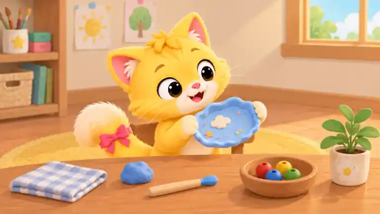
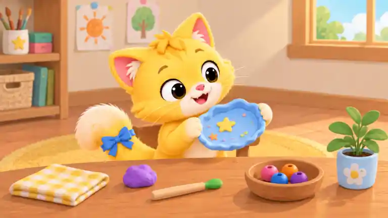
暖暖粉尾结变蓝 · 托盘白云变黄星 · 蓝陶泥团变紫 · 塑形工具蓝头变绿 · 红木珠变粉 · 黄木珠变橙 · 绿木珠变紫 · 蓝格布变黄格布 · 花盆白色变浅蓝 · 墙上太阳画黄太阳变橙
high · 双角色、小车轮轴、维修架、备用轮、工具箱、墙面工具板和四罐零件，实际信息量较高。
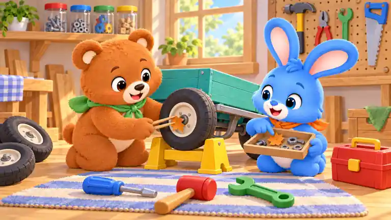
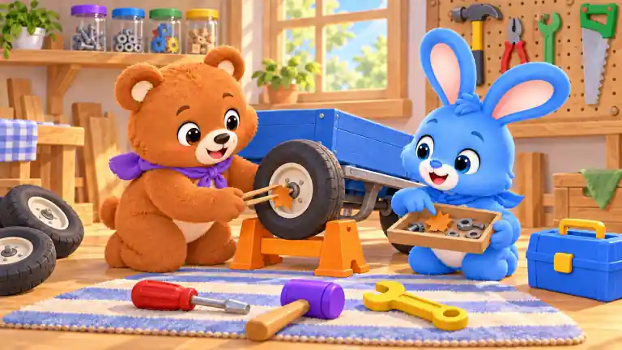
团团绿围巾变紫 · 跃跃橙围巾变蓝 · 推车青绿变深蓝 · 黄维修架变橙 · 蓝螺丝刀柄变红 · 红木槌头变紫 · 绿扳手变黄 · 红工具箱变蓝 · 左上罐红盖变紫 · 右墙锯蓝柄变绿
high · 单角色但工具托盘、六种轮廓、墙面工具、零件罐、三抽屉和前景玩具形成高密度细节。
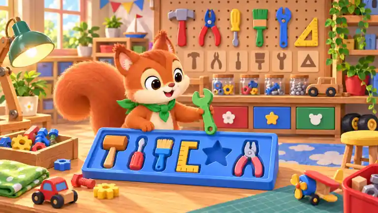
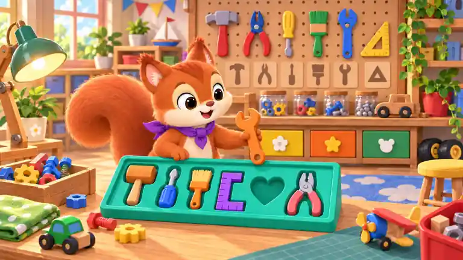
栗栗绿围巾变紫 · 手中绿扳手变橙 · 蓝工具托盘变青绿 · 星形空位变心形 · 托盘红螺丝刀柄变蓝 · 托盘蓝刷柄变橙 · 托盘黄直角尺变紫 · 后方红抽屉变黄 · 后方蓝抽屉变橙 · 桌前红色玩具车变绿色
low · 单角色、三只大灯罩和三枚夹子为主要物件，墙面大面积留白。
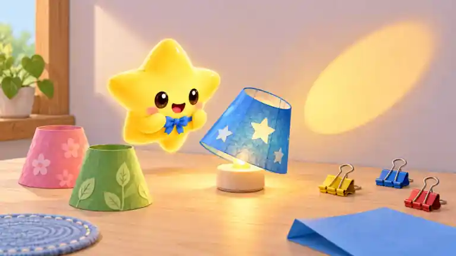
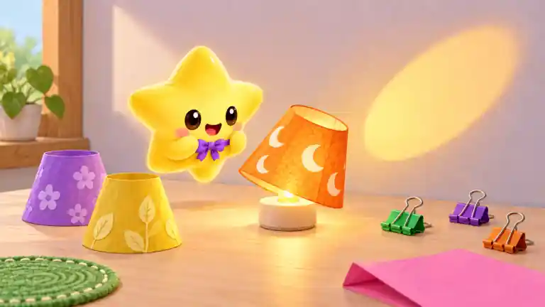
星伴蓝领结变紫 · 蓝灯罩变橙 · 灯罩白星变白月 · 粉灯罩变紫 · 绿灯罩变黄 · 黄夹子变绿 · 蓝夹子变紫 · 红夹子变橙 · 折叠蓝纸变粉 · 蓝圆垫变绿
medium · 双角色围绕托盘和木珠，桌面材料与背景手作物件分组清楚，信息量适中。
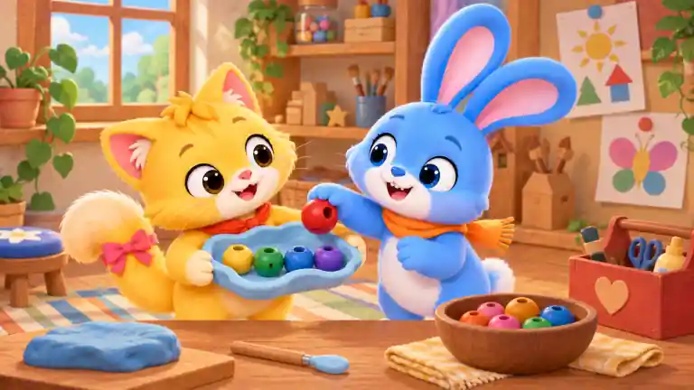
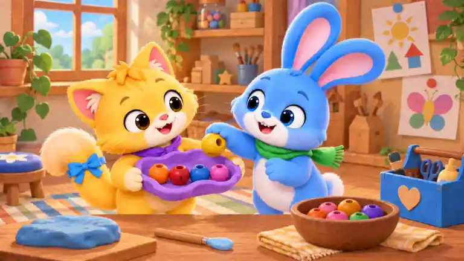
暖暖红围巾变紫 · 跃跃橙围巾变绿 · 暖暖粉尾结变蓝 · 歪托盘蓝色变紫 · 手中红木珠变黄 · 托盘黄木珠变橙 · 托盘绿木珠变红 · 托盘紫木珠变粉 · 前碗蓝木珠变紫 · 右侧红工具箱变蓝
high · 双角色、双层把手、小车、零件罐、墙面工具、柜架与前景零件构成高密度搜索。
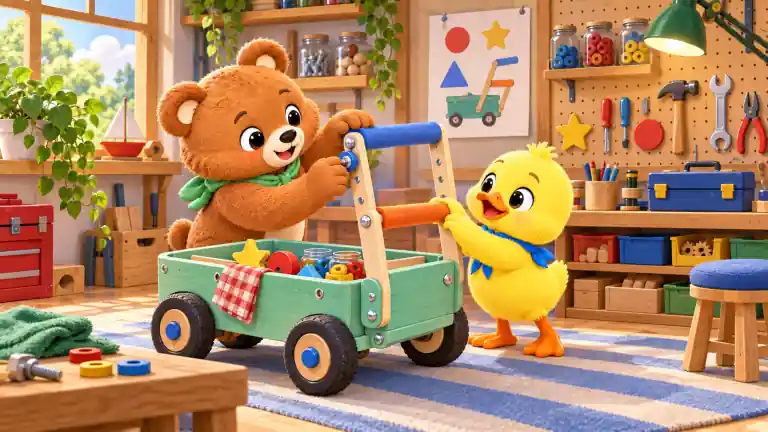
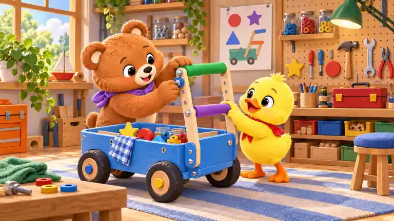
团团绿围巾变紫 · 点点蓝围巾变红 · 上层蓝握把变绿 · 下层橙握把变紫 · 推车青绿变蓝 · 前轮蓝轮毂变黄 · 红格布变蓝格布 · 左侧红工具柜变橙 · 墙图黄星变紫 · 后方蓝工具箱变红
low · 双角色和四面大色块旗为主，背景与地面留白明显，物件边界清晰。
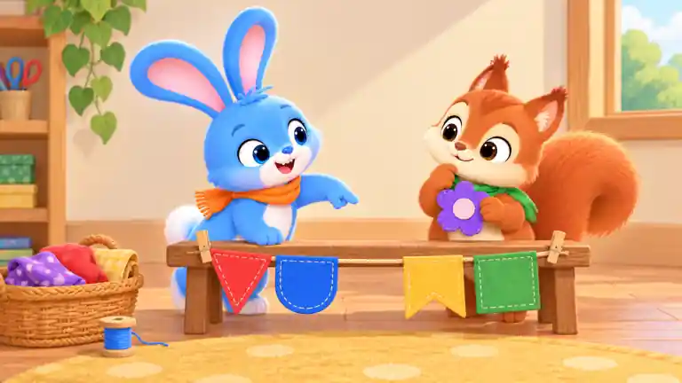
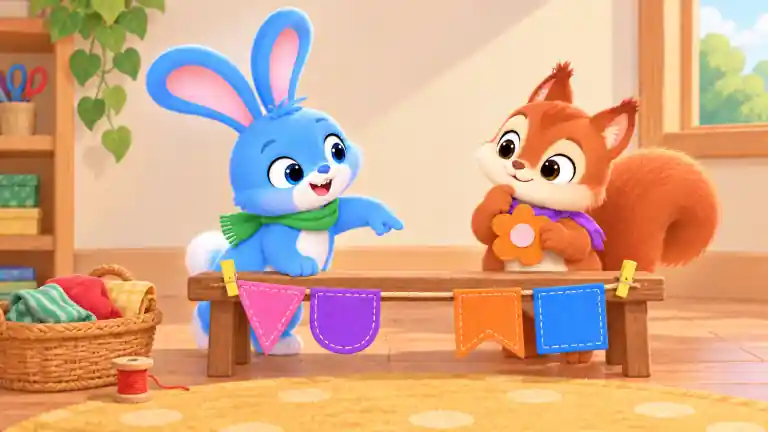
跃跃橙围巾变绿 · 栗栗绿围巾变紫 · 紫花布片变橙 · 红三角旗变粉 · 蓝圆底旗变紫 · 黄燕尾旗变橙 · 绿方旗变蓝 · 篮中紫圆点布变绿条纹 · 蓝线轴变红 · 两只木夹变黄色
high · 双角色、叠色窗、彩色光块、夹子、纸片、画卡、剪刀和工作室背景细节丰富。
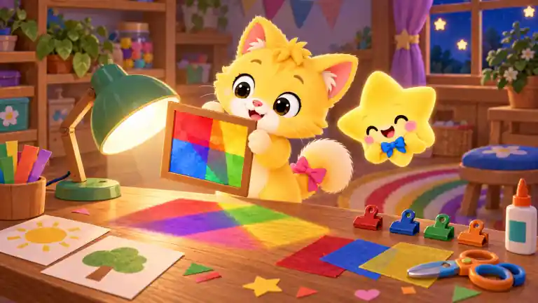
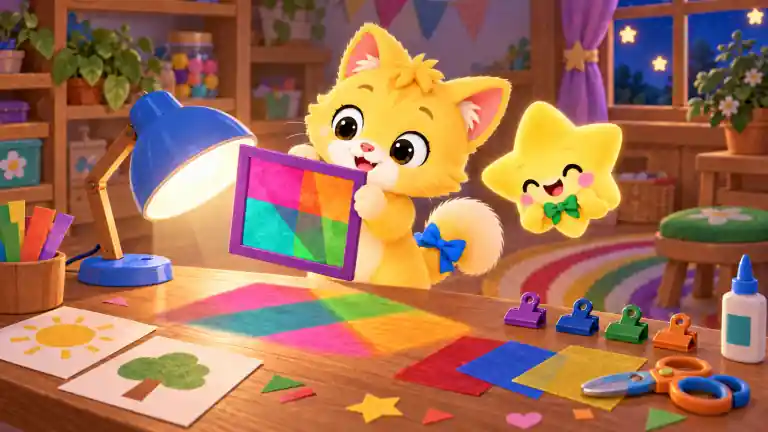
暖暖粉尾结变蓝 · 星伴蓝领结变绿 · 绿台灯变蓝 · 木窗框变紫 · 红透光纸变粉 · 蓝透光纸变青绿 · 黄透光纸变橙 · 红夹子变紫 · 胶水橙盖变蓝 · 蓝圆凳面变绿
high · 三角色、满载小车、工坊工具与箱柜、旗帜灯笼、门外花径共同形成章节高潮式高密度画面。
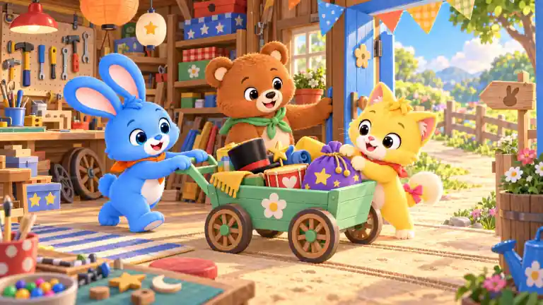
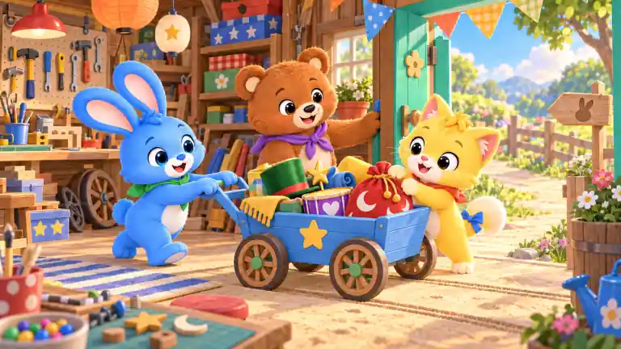
跃跃橙围巾变绿 · 团团绿围巾变紫 · 暖暖粉尾结变蓝 · 推车青绿变蓝 · 车侧白花变黄星 · 紫道具袋变红 · 袋上黄星变白月 · 黑礼帽变绿 · 红鼓身变紫 · 蓝门变青绿色